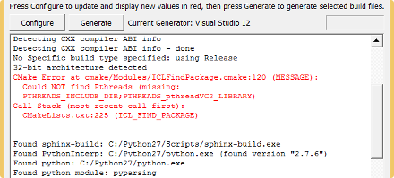
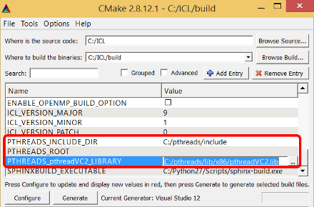

Installation Instructions for Windows¶
ICL can be downloaded as source code via SVN or as binary package (soon). Please refer to the download instructions for details. ICL uses standard CMake as its build system (for more details on CMake visit http://www.cmake.org/). ICL comes with only very few installation dependencies. We decided to make a small set of dependencies compulsory in order to limit the set of possible combinations.
Table of Contents¶
External Dependencies¶
Most external dependencies are kept purely optional. There are only few mandatory dependencies and most are delivered by the ICL.
Mandatory Dependencies¶
- pthreads (for general threading support)
- zlib (for reading and writing zipped files, ending .gz)
- libjpeg (for reading and writing jpeg images, lossy but high compression, fast)
- libpng (for reading and writing png images, loss-less compression, but rather slow in comparison to jpeg)
In Windows you only need to get libpthread. All other mandatory libraries are provided by the ICL. libpthread can be downloaded on the following website:
Dependencies for the Documentation¶
In order to create the documentation of ICL and this manual you need to install some tools:
- Python 2.7.x
- pyparsing
- Sphinx
- Doxygen
You can get Python on the following website:
After installing Python it is recommended to add the Python and Python/Scripts directory to the environment variable PATH. For an easy installation of pyparsing and Sphinx download setuptools here:
Using the command prompt browse to the directory with the previously downloaded file and run the following commands to install setuptools, pyparsing and Sphinx:
python ez_setup.py easy_install pyparsing easy_install sphinx
Now you only need Doxygen which can be found here:
Optional Dependencies¶
In general each optional dependency adds some extra functionality to ICL. In some of the cases, also a slower but native fallback implementation is provided. In the following, the external dependencies are listed and their benefits are explained.
Overview:¶
- Intel Integrated Performance Primitives (Intel IPP)
- Intel Math Kernel Library (Intel MKL)
- Open Computer Vision Library (OpenCV)
- SwissRanger Driver Library (libMesaSR)
- Image Magick (libmagick++)
- libdc1394
- OpenKinect Kinect Driver Library (libfreenect)
- Xine (libxine)
- Qt Library (libQt5)
- Basler Pylon Drivers
- OpenNI / Nite
- Open Computing Language (OpenCL)
- Point Cloud Library (PCL)
- Robotics Service Bus (RSB)
Intel Integrated Performance Primitives (Intel IPP)¶
The Intel IPP is a proprietary library that provides a very large set of highly optimized functions for different domains, such as linear algebra and in particular computer-vision and image processing. Important: Since Intel IPP is proprietary software, Intel IPP linkage must be established by manually compiling ICL from source. However, we plan to replace the static linkage against Intel IPP with a run-time linking approach that would also work for binary installation sources.
- Supported Versions:
- License Type: Proprietary, but free to try and for private use (research is not private)
- Download at: http://software.intel.com/en-us/intel-ipp/
- Dependent library features: Most low-level image processing functions such as scaling, converting and linear filters are internally replaced by highly efficient Intel IPP function calls. The filter::ProximityOp filters are not available without Intel IPP yet (but we plan to add fallback implementations soon).
Intel Math Kernel Library (Intel MKL)¶
The Intel Math Kernel Library dependency is quite similar to the Intel IPP dependency. However, Intel MKL is only used for a much smaller set of linear algebra functions. Global mathematical utility functions such as math::big_matrix_mult_t or DynMatrix::big_matrix_pinv significantly accelerated if Intel MKL is available. However, in contrast to the Intel IPP dependency, all MKL-accelerated functions have an equivalent C++ fallback implementation.
- Supported Versions: >= 10.3
- License Type: Proprietary, but free to try and for private use (research is not private)
- Download at: http://software.intel.com/en-us/intel-mkl/
- Dependent library features: Accelerated functions for big matrices, most of them located in DynMatrixUtils.h
Open Computer Vision Library (OpenCV)¶
We use OpenCV mainly in order to provide a compatibility interface that converts OpenCV’s common image data type cv::Mat into ICL’s image type core::ImgBase and vice versa. The header OpenCV.h in the ICLCore module provides efficient and simple to use converter methods. These are only available if the OpenCV dependency is met. In addition, OpenCV is currently needed for the LibOpenSurf (http://www.chrisevansdev.com/computer-vision-opensurf.html) based backend of the cv::SurfFeatureDetector which is directly part of ICL.
- Supported Versions: >= 2.1
- License Type: BSD-License
- Download at: http://sourceforge.net/projects/opencvlibrary/files
- Dependent library features:
- Data type conversions
- C++-based surf feature detection
- OpenCV-based camera grabber backend
- OpenCV-based video grabber backend
- Video-writer backend
- intrinsic camera calibration tool
SwissRanger Driver Library (libMesaSR)¶
LibMesaSR is a proprietary library that allows to grab images from SwissRanger 3D time-of-flight cameras provided by the Mesa Imaging company (http://www.mesa-imaging.ch) The library is closed source.
- Supported Versions: >= 1.0.14
- License Type: Proprietary
- Download at: http://www.mesa-imaging.ch/drivers.php
- Dependent library features: SwissRanger camera grabber backend
Image Magick (libmagick++)¶
ImageMagick is used to provide a large set of support image types. Most types are supported in both reading and writing. Without ImageMagick, only a few image data types are supported: .ppm, .pnm and .pgm as well as ICL’s internal image format .bicl are natively supported, .png and .jpg are supported explicitly by other external dependencies.
- Supported Versions: >= 1.0.14
- License Type: Proprietary
- Download at: http://www.imagemagick.org/script/index.php
- Dependent library features: huge set of image reading and writing backends
libdc1394¶
The dc1394 (digital firewire camera) library allows to grab image from firewire cameras and to set camera parameters.
- Supported Versions: >= 2.1.2
- License Type: open source
- Download at: http://damien.douxchamps.net/ieee1394/libdc1394/
- Dependent library features: firewire camera grabber backend
OpenKinect Kinect Driver Library (libfreenect)¶
The libfreenect provides a lightweight interface for grabbing images from Microsoft Kinect cameras. The library allows to grab color, depth and IR-images and to set some internal camera properties.
- Supported Versions: >= 0.0.1
- License Type: open source
- Download at: https://github.com/OpenKinect/libfreenect
- Dependent library features: libfreenect-based access to Kinect cameras (Please note, that we also provide an alternative using OpenNI)
Xine (libxine)¶
The xine library provides a very intuitive yet powerful interface for grabbing video in a frame-by-frame manner.
- Supported Versions: >= 1.1.17
- License Type: open source
- Download at: http://www.xine-project.org/home
- Dependent library features: xine-based video grabber backend (Please note, that we also provide an alternative using OpenCV)
Qt Library (libQt5)¶
The well known Qt Library is used for ICL’s rapid GUI creation toolkit. Actually Qt is also a prerequisite for most ICL applications and for the whole ICLQt module. We strongly recommend to have at least Qt support when building ICL. The Qt package right now also used the OpenGL extension wrangler library Glew and it needs OpenGL headers to be installed.
- Supported Versions: 5
- License Type: open source
- Download at: http://qt.digia.com/
- Dependent library features:
- GUI-framework and all dependent applications
- Shared memory based image-I/O backends
Basler Pylon Drivers¶
The closed source basler pylon drivers (including the Genicam libraries) are used for accessing Gigabit-Ethernet (GIG-E) cameras.
- Supported Versions: >= 2.3.3
- License Type: closed source
- Download at: http://www.baslerweb.com/Downloads-Software-43868.html
- Dependent library features: Pylon grabber backend for GIG-E Cameras
Open Computing Language (OpenCL)¶
OpenCL is used to significantly speed up a set of processing units using the computing units of graphics cards or other OpenCL platforms. We mainly use it for point cloud processing units located in the ICLGeom module.
- Supported Versions: >= 1.1 (1.2 soon)
- License Type: open source
- Download at: http://www.khronos.org/registry/cl
- Dependent library features:
- significantly faster point cloud creation and RGBD-mapping (geom::PointCloudCreator, geom::DepthCameraBasedPointCloudGrabber)
- significantly faster point cloud normal estimation and segmentation (geom::PointCloudNormalEstimator)
OpenNI / Nite¶
Right now, we only use OpenNI as an alternative backend to grab images from Kinect and other PrimeSense 3D cameras
- Supported Versions: >= 1.x
- License Type: OpenNI: open source, Nite: closed source
- Download at: http://www.openni.org/
- Dependent library features: OpenNI-based grabber backend for depth, IR- and color images
Point Cloud Library (PCL)¶
PCL has become some kind of a quasi-standard for point cloud processing. ICL’s ICLGeom module provides the generic geom::PointCloudObjectBase interface that is implemented by the geom::PCLPointCloudObject class. In case of having PCL support, ICL can seamlessly interface to PCL algorithms using this class.
- Supported Versions: >= 1.6
- License Type: open source
- Download at: http://pointclouds.org/downloads/
- Dependent library features:
- geom::PCLPointCloudObject class.
- geom::PCDFileGrabber class
Todo
There is an unsolved dependency between PCL and OpenNI, since our PCD-File Grabber uses libpcl-io, which in turn depends on openni.
Robotics Service Bus (RSB)¶
The robotics service bus is a new and versatile library for interprocess communications. ICL uses it as backends for the io::GenericGrabber and the io::GenericImageOutput to exchange image data between different processes and PCs.
- Supported Versions: >= 0.7
- License Type: open source
- Download at: http://docs.cor-lab.de//rsb-manual/0.10/html/index.html
- Dependent library features: rsb-based image I/O backends
Installation from Source¶
Before you can install the ICL you need to get some tools:
- Subversion: http://subversion.apache.org/packages.html
- Visual Studio: http://www.visualstudio.com/downloads/download-visual-studio-vs
- CMake: http://www.cmake.org/cmake/resources/software.html
Then you can open your command window and check out the source files:
svn co https://opensource.cit-ec.de/svn/icl/trunk ICL
In CMake you have to choose the directory with the ICL files and the build destination. By clicking on the Configure button you have to specify the generator. In our case it is Visual Studio. In addition you have the choice between a 32 bit and 64 bit compiler. By confirming the selection you get a list with the configuration options for the project.
Note
If you use external libraries of a specific Visual Studio version, you have to choose the same compiler or you may experience wrong behaviour while using the ICL.
Every time you change one of the options you have to update the settings by clicking on the Configure button again. In case of an error CMake will show it in its output window. A red message means that the progression cannot go further.
Now you have to configure at least the path to the Pthreads folder, if it is not detected automatically. This can be done by choosing the root directory with the library and the include files by setting the variable PTHREADS_ROOT. Another way is to select the Pthreads library PTHREADS_pthreadVC2_LIBRARY and the include directory PTHREADS_INCLUDE_DIR directly.
Every other option in the list is optional. By adding more libraries you have to do the same as with Pthreads after updating the configuration. At the end you have to use the Generate Button in order to create the project files.
In the build folder you will find the file ICL.sln you can use to open the project with Visual Studio. If you start the project you should select the configuration type first. In addition you have the choice to create Debug or Release binaries.
In order to compile the binaries you have to build the project ALL_BUILD. If you want to create the documentation and the manual you have to build the projects doc and manual explicitly.
You can use the project INSTALL to copy all generated files, which are needed for your own projects, into the installation directory. This folder is selected during the CMake configuration.
At this point it is recommended to add an environment variable with the ICL installation folder and the directory with the created Dynamic-link Libraries (DLL’s) to your system path. For an easy access to the ICL installation folder add the environment variable ICL_DIR with the directory of the ICL. This can be done with the following line in the command prompt:
setx -m ICL_DIR INSTALL_DIR
Here INSTALL_DIR is the path to the folder containing the installed files.
Applications which are using the ICL need an access to the ICL libraries. The nasty way is to put the DLL’s and the application executable in the same folder. By adding the directory of the DLL’s to the system variable PATH you will avoid the previously mentioned solution. This variable defines directories where an application can search for missing libraries.
Installaion using Binary Packages¶
Binary packages are not yet supported, but we plan to support this as soon as possible.